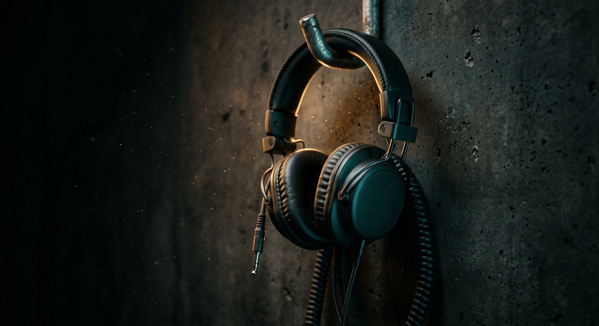
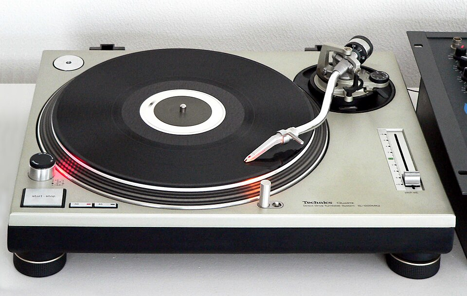
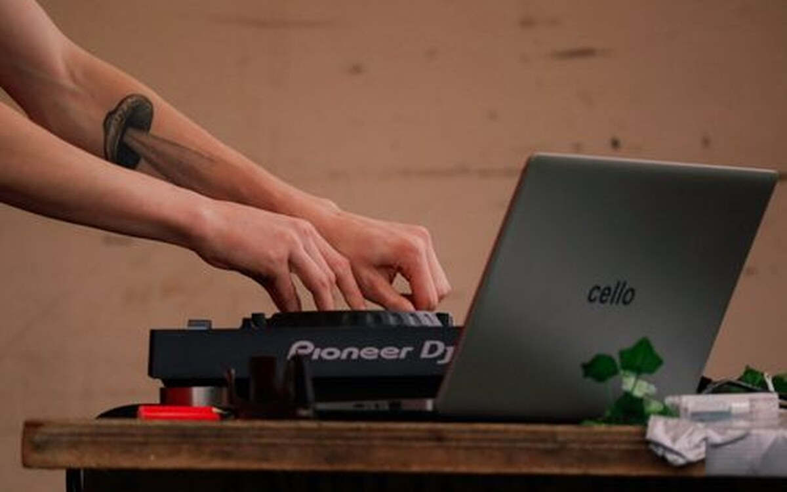

Best DJ Headphones 2026
Isolation, clamp force, split-headbands and replaceable parts: what separates club survivors from studio cans.
Offbeat publishes practical buying advice, real hardware comparisons, and hands-on mixing drills for DJs and producers — so you can build a solid setup and mix with confidence from day one.

Affiliate disclosure: some links on Offbeat earn us a commission if you buy. It never changes what you pay, and it never decides what we recommend. Read the full policy.
Four clear paths into the guides, whether you're touching your first jog wheel, upgrading your decks, or prepping for your first club set.

What you actually need to start, what you can skip for now, and an honest first controller shortlist between $100 and $350.
Start here
Compare by software fit, inputs, jog size and the feature you will actually notice — including the step-up traps to avoid.
Gear hub
Which platform unlocks with which hardware, what the free tiers really allow, and how to avoid paying twice.
6 platforms
Beatmatching by ear, transitions that hold a floor, recording a clean mix, and how people actually get booked.
SkillsThe buyer guides most visitors start with: specifications read from manufacturer documentation, prices checked against retailer listings in October 2026, and no sponsored rankings.
Five standout models across $99 to $1,729, compared on documented jog and platter hardware, the licence each one unlocks, and the features you will actually use — not marketing spec sheets. Includes our beginner pick and the four-deck club option.

Isolation, clamp force, split-headbands and replaceable parts: what separates club survivors from studio cans.
The three platforms that define hardware DJing compared on library workflow, club CDJ migration, and 3-year license cost.
We built the tools we wished existed when buying gear and practising transitions. Two of them are below; the other five are in the tools hub.
Map out your complete DJ setup before you spend a dime. Choose your controller, monitors, and headphones — verify physical audio cables, subtract gear you already have at home, and get a realistic total.
Two synthesised turntables, pitch faders, downbeat CUE drops, and jog wheel nudging. Measures kick drift down to the millisecond so you learn how to hear phase drift without touching physical hardware.
Set your spending ceiling first. Each tier breaks down the best DJ controllers, honest tradeoffs, and what you actually get for your money.
Gear guides grouped the way a rig is actually assembled — source, control, monitoring, and sound.



Most DJs stay on one platform for years. These guides are written to help you pick once.
A realistic order of operations for the first year, from beatmatching by ear to your first paid set.
The skill that makes every other technique easier — and the one that still gets people hired. Learn manual beatmatching →
Phrasing, EQ and when to cut rather than blend. How to mix for beginners →
Clean gain staging, tracklist discipline and the rights questions around uploading mixes. Record a DJ mix →
What promoters want to see, how to approach them, and the practical side of playing someone's wedding. How to get DJ gigs →
Guides are built from manufacturer specifications, software support documentation and current retailer listings. Where we have not handled a product, we say so instead of inventing a score.
Editorial standards →Price notes carry the month they were checked and the type of source used. Retail prices move — every buying page tells you what to confirm before you pay.
How we make money →If a specification, price or recommendation is wrong, tell us and we will fix it and say what changed.
Send a correction →